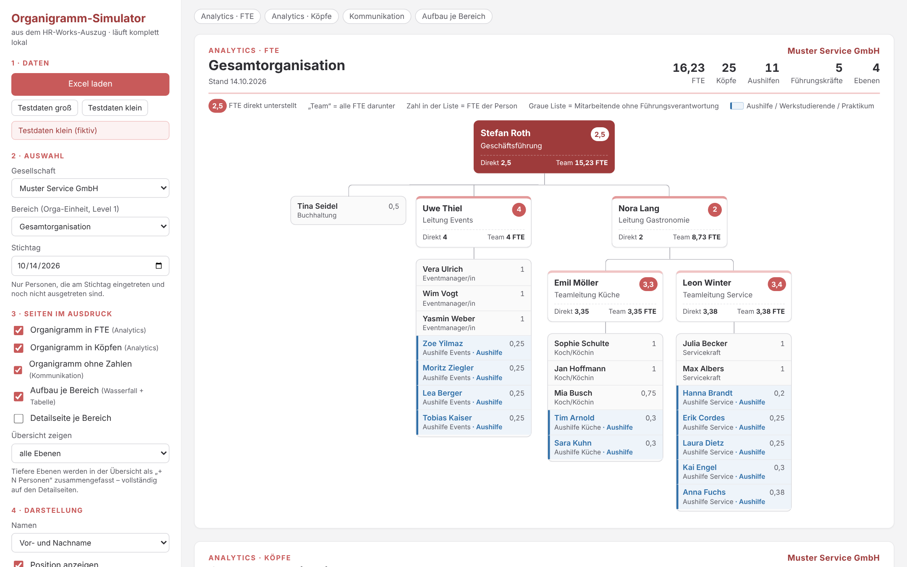

organigramm.html per Doppelklick im Browser öffnen → Excel laden →
Einstellungen links wählen → Drucken / als PDF speichern. Die Daten werden ausschließlich lokal im Browser verarbeitet –
nichts wird hochgeladen oder gespeichert, eine Internetverbindung ist nicht nötig.
organigramm.html doppelklicken (Chrome oder Edge empfohlen). Zum Ausprobieren gibt es die Buttons Testdaten groß und Testdaten klein mit erfundenen Personen.| Einstellung | Wirkung |
|---|---|
| Gesellschaft | Filtert auf eine Gesellschaft (Spalte Gesellschaft / Mandant). Der Name steht oben rechts auf jeder Seite. |
| Bereich | Gesamtorganisation oder ein einzelner Bereich (Spalte Orga-Einheit, Level 1). Die ranghöchste Person des Bereichs steht dann oben. |
| Stichtag | Es erscheinen nur Personen mit Eintrittsdatum ≤ Stichtag und ohne Austritt vor dem Stichtag. So lassen sich auch zukünftige Stände simulieren. |
| Organigramm in FTE | Analytics-Ansicht: rote Zahl = direkt unterstellte FTE, „Team“ = alle FTE darunter, in den Listen die FTE je Person. |
| Organigramm in Köpfen | Wie oben, aber nach Personen gezählt. |
| Organigramm ohne Zahlen | Kommunikationsversion für Aushänge, Präsentationen und Onboarding – nur Namen und Positionen. |
| Aufbau je Bereich | Wasserfall: wie sich die Gesamtzahl aus den Bereichen zusammensetzt (links FTE, rechts Köpfe) plus Tabelle mit Festangestellten, Aushilfen und Ø FTE je Kopf. |
| Detailseite je Bereich | Zusätzlich eine eigene Seite pro Bereich (für jede gewählte Organigramm-Art) mit allen Ebenen. |
| Übersicht zeigen | Wie tief die Gesamtübersicht geht. Tiefere Ebenen erscheinen als „+ N Personen darunter“. Bei bis zu 60 Personen ist automatisch „alle Ebenen“ gewählt. |
| Namen | Vor- und Nachname, Initialen oder Anonym (nur Position) – z. B. für Abstimmungen, bevor Namen kommuniziert werden dürfen. |
| Position anzeigen | Blendet die Position unter dem Namen ein oder aus. |
| Aushilfen & Werkstudierende | farblich hervorheben (blaue Markierung), je Team zusammenfassen („+ 4 Aushilfen“) oder ausblenden – dann zählen sie auch in keiner Kennzahl mit. |
| 1 FTE entspricht … Wochenstunden | Standard 40. FTE = Wochenarbeitsstunden ÷ diesem Wert. |
| Papierformat | A3 quer (empfohlen für große Einheiten) oder A4 quer. |
| Suche | Markiert Personen nach Name oder Position (nur am Bildschirm). |
Der Simulator sucht die Spalten über ihre Überschrift – Reihenfolge und zusätzliche Spalten spielen keine Rolle.
| Spalte im HR-Works-Auszug | Verwendung |
|---|---|
| Personalnummer | eindeutige Kennung der Person (Pflicht) |
| Vorgesetzter-Personalnummer | baut die Hierarchie auf (Pflicht). Leer oder eigene Nummer = oberste Person. |
| Vorname, Name | Anzeige auf den Karten |
| Position | Anzeige unter dem Namen; bei „Anonym“ statt des Namens |
| Wochenarbeitsstunden | Berechnung der FTE (Std. ÷ 40) |
| Hierarchiefeld | erkennt Aushilfen, Werkstudierende und Praktika (enthält „Aushilfe“, „Werkstudent“, „Temp“, „Prakti“ oder „Intern“) |
| Arbeitsverhältnis | Ersatz, falls das Hierarchiefeld leer ist („Geringfügig beschäftigt“, „Praktikum“, „Werkstudent“) |
| Gesellschaft / Mandant | Filter und Angabe oben rechts |
| Orga-Einheit, Level 1 | Bereichs-Filter |
| Name der Organisationseinheit | Bereichsnamen im Wasserfall und auf den Detailseiten |
| Eintrittsdatum, Austrittsdatum | Stichtags-Filter |
Alle übrigen Spalten (z. B. Geburtsdatum, E-Mail, Dienstwagen) werden ignoriert.
| Hinweis | Bedeutung / Lösung |
|---|---|
| Vorgesetzte/r … nicht in der Datei | Die Vorgesetzten-Personalnummer kommt im Auszug nicht vor. In HR Works prüfen oder Auszug vervollständigen. |
| Personen ohne Vorgesetzte/n | Es gibt mehrere oberste Personen; sie werden unter einer gemeinsamen Spitze gezeigt. |
| keine Wochenarbeitsstunden | Person zählt mit 0 FTE. Wert in HR Works ergänzen. |
| Personalnummer doppelt | Nur der erste Eintrag wird verwendet. |
| … am Stichtag nicht aktiv | Info: Ein- oder Austritte außerhalb des Stichtags werden nicht gezeigt. |